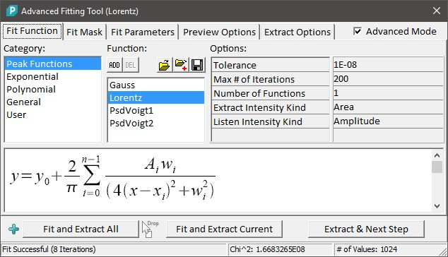
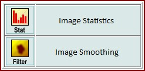
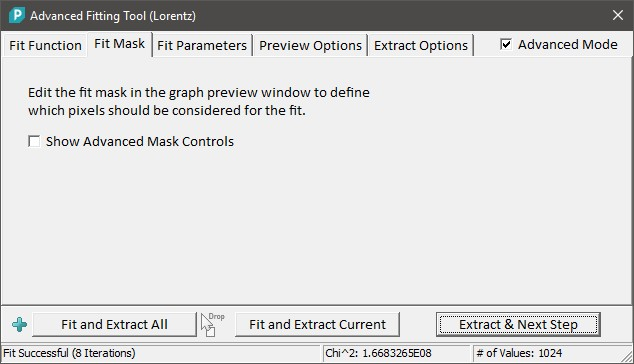
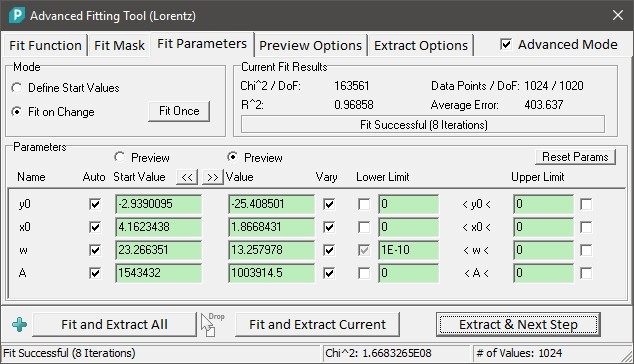
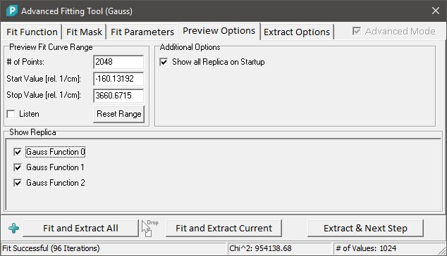
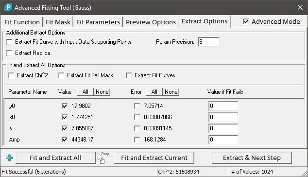
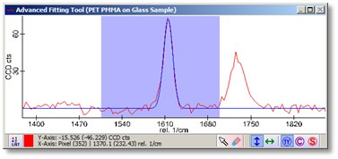
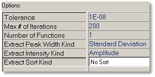
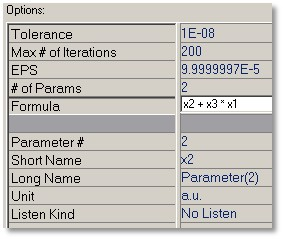
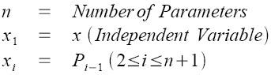

|
|
描述
使用高级拟合工具可以进行简单以及更高级的曲线拟合。该工具支持峰拟合以及其他曲线，如指数曲线、多项式曲线甚至用户自定义函数。
输入和结果
输入：
一个图谱对象（单个光谱或高光谱数据对象）。
结果：
如何操作 ...？
保存我的拟合函数参数以供以后再次使用：
使用我自己的拟合函数公式：
用户界面

类别（列表框）：
在此选择一个拟合函数类别。选择另一个类别时，"函数"列表将更新。
函数（列表框）：
在此选择一个拟合函数。
添加（工具按钮）：
将当前选中的函数及其所有当前设置和参数添加为用户拟合函数。将创建一个额外的"用户"类别，其中可以找到添加的函数。
用户添加的所有函数将在关闭对话框时自动保存（"每用户"设置）。
删除（工具按钮）：
从用户函数列表中移除用户自定义函数。
打开（工具按钮）：
打开一个WITec用户拟合函数文件，并替换当前的用户拟合函数。
追加（工具按钮）：
打开一个WITec用户拟合函数文件，并将加载的拟合函数添加到当前用户定义的拟合函数中。
保存（工具按钮）：
将当前用户拟合函数列表保存到一个文件中。
选项（参数列表）：
一些标准拟合算法参数可以在此更改（如容差和迭代次数）。每个拟合函数也可能有自己的参数，如某些参数的提取类型或曲线数量（例如多峰拟合）。
请参见拟合函数选项。
描述（图形框）：
显示拟合公式及其所有参数。您可以通过单击并移动或使用滚动条来移动图形。
拟合并提取全部（按钮，拖放区）：
为当前高光谱数据集中的所有光谱启动拟合计算。您也可以从项目管理器中拖放（多个）数据对象到此按钮以进行批处理。这是一个WITec Project Plus功能。
拟合并提取当前（按钮）：
为当前选中的光谱启动拟合计算并提取结果。
提取和下一步（按钮）：
向导功能：您可以选择是否希望将此对话框的结果图像用于图像统计对话框或进行一些图像平滑：


您可以更改拟合掩码以定义哪些像素应被拟合算法考虑。
这些编辑是可选的，您也可以直接在预览图谱查看器中更改掩码。
高级模式
如果打开高级模式，可以访问所有拟合参数和预览/提取选项。
如果您进行多峰拟合或用户自定义拟合函数以定义所有拟合参数的起始值，则需要此模式。

模式
定义起始值（单选按钮）：
选择此模式以定义拟合的起始值。这将在预览图谱查看器中以蓝色预览曲线显示使用起始值的拟合函数，以便于找到良好的起始值。
如果您希望在不进行自动拟合的情况下更改任何参数或限制，也请选择此模式："起始值"列（或"值"列）中的值将被保留。
更改时拟合（单选按钮）：
如果任何参数或限制被更改，甚至通过单击图像等其他位置选择另一个光谱时，自动计算拟合，请选择此模式。
这是默认模式。
拟合一次（按钮）：
单击此按钮以执行一次拟合算法。
当前拟合结果
指示上次拟合是否成功，并显示典型的拟合结果信息。
参数
显示所有拟合函数参数。请注意，所有绿色编辑框可以双击以启用监听在查看器窗口中执行的鼠标操作。
重置参数（按钮）：
将所有参数、值、起始值、限制和所有复选框重置为其默认值。
名称（标签列）：
显示每个函数参数的名称。用鼠标拖过标签以获取更详细的信息。
自动（复选框列）：
如果选中，函数参数的起始值将在进行拟合时自动计算。
如果使用多峰函数或用户自定义函数，则此功能不可用。
起始值（浮点编辑列）：
显示所有参数的起始值。
预览（起始值列单选按钮）：
如果选中此单选按钮，预览图谱查看器中的蓝色图谱将显示使用起始值列参数（自动估计或用户定义）的当前拟合函数。
值（浮点编辑列）：
显示当前拟合结果的所有参数。
预览（值列单选按钮）：
如果选中此单选按钮，预览图谱查看器中的蓝色图谱将显示使用值列参数（通常是当前拟合结果）的当前拟合函数。
变化（复选框列）：
如果选中，该参数（值列）用于拟合，因此会由拟合过程更改——如果您希望参数保持静态（例如已知的峰位置），则不要变化该参数。
下限（复选框和浮点编辑列）：
允许为每个参数定义下限。仅当复选框被选中时，该限制才会生效。
上限（复选框和浮点编辑列）
允许为每个参数定义上限。仅当复选框被选中时，该限制才会生效。

预览拟合曲线范围
点数（整数编辑）：
设置拟合预览曲线的支撑点数（通常应为输入图谱光谱像素数的两倍左右）。
开始/停止值（浮点编辑）：
设置应显示为预览拟合曲线的范围。
使用此功能，您可以隐藏"不需要"的区域（例如，如果多项式等曲线具有极值）。
监听（复选框）：
可以监听来自图谱查看器的范围（使用标记区域鼠标模式）以设置范围。
重置范围（按钮）：
将范围重置为完整的输入光谱范围。
附加选项
启动时显示所有副本（复选框）
如果选中，多峰曲线的副本将在预览图谱窗口中显示为绿色图谱。
显示副本（复选框列表）
您可以切换预览图谱窗口中多峰拟合函数的每个单个副本曲线的可见性。

额外提取选项
提取带输入数据支撑点的拟合曲线（复选框）：
如果选中，提取的拟合曲线使用与输入数据对象相同的精确支撑点和相同的X变换。这使得提取的拟合曲线可以与其他拖放操作对话框中的光谱对象一起使用（例如计算器）。
提取副本（复选框）：
如果选中，执行提取操作时每个副本拟合曲线将分别提取。
参数精度（整数编辑）：
定义使用"拟合并提取当前"按钮时文本对象中浮点数的精度。
拟合并提取全部选项
提取Chi^2（复选框）：
如果选中，Chi^2（描述拟合误差）将与拟合结果一起提取。
提取拟合失败掩码（复选框）：
如果选中，拟合失败掩码将与拟合结果一起提取。所有未能拟合（由于拟合错误）的像素在此掩码中设置为1。
提取拟合曲线（复选框）：
如果选中，拟合曲线将与拟合结果一起提取。
值（复选框列）：
您可以选择应提取其拟合结果的函数参数作为结果数据对象。
误差（复选框列）：
您可以选择应提取其拟合误差的函数参数作为结果数据对象。
拟合失败时的值（浮点编辑列）：
输入一个值，如果拟合失败，该值将用作参数的拟合结果。

图谱预览窗口以红色图谱显示原始图谱，以蓝色曲线显示拟合预览。
在高级模式下，可以显示起始值列作为预览曲线。在这种情况下，蓝色曲线显示使用起始值的拟合函数。
峰拟合选项

容差：
如果达到此误差阈值，拟合算法停止。
最大迭代次数：
如果达到此编辑框中指定的拟合迭代次数，拟合算法也会停止——即使尚未达到容差误差。
函数数量：
一些峰拟合函数（高斯、洛伦兹）允许多峰拟合；可以在此更改函数数量。
提取峰宽类型：
一些峰函数允许不同的峰宽类型（如"标准偏差"或"FWHM"）。只有提取的结果包含这些宽度类型。
提取峰强度类型：
一些峰函数允许不同的峰强度类型"面积"和"幅度"。只有提取的结果包含这些强度类型。
提取排序类型：
高斯拟合函数允许在使用多峰拟合时对提取结果进行排序，例如按峰中心/位置排序。这意味着第一个结果具有最低的峰位置，第二个结果具有第二低的峰位置，依此类推。
用户自定义拟合函数的选项

参数数量：
定义拟合函数的变量数量。
公式：
在此输入您的拟合公式（请参见公式编辑器）：

例如，x2 + x3 * x1 是一条简单的线，其中 x2 是偏移量（参数编号2），x3 是斜率（参数编号3）。
参数编号：
输入参数索引/编号以为该参数定义短名称、长名称、单位和监听类型。
例如，参数编号2是第一个参数，在公式中命名为x2。
短名称：
参数的短名称。应仅包含几个字符。
长名称
参数的详细名称。
单位：
参数单位。您可以使用以下变量：
监听类型：
此参数的监听类型。例如，如果参数表示峰位置，可以使用监听类型"X轴"来使用监听机制在拟合参数选项卡中找到良好的起始值。
以下监听类型可用：